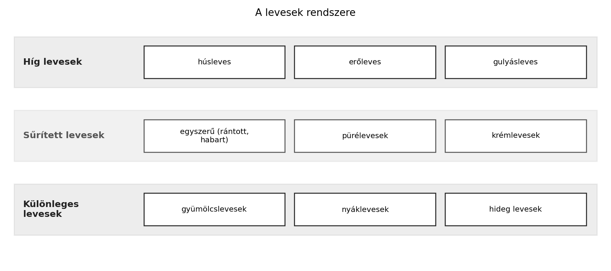

Egy forgalmas étteremben a napi menü gyakran levessel indul. A vendég az első kanál után dönti el, hogy a konyha igényes-e. Ha a húsleves zavaros, a gulyásleves zsíros vagy sótlan, a főétel sem menti meg az ebédet. A leves a magyar konyha egyik alapfogása: megnyitja az étkezést, felkészíti a gyomrot a következő fogásra, és hőmérsékletével, ízével az egész menü hangulatát megszabja. Szakácsként ezért pontosan kell ismerned a levesek csoportjait, technológiáját és a magyaros híglevesek pirított alapját.
Képzeld el, hogy egy nagy főzőüstben lassan, gyöngyözve forr néhány tyúk, vegyes zöldség és fűszer. A felszínén szürkés hab gyűlik össze – ezt le kell szedni, hogy a lé tiszta maradjon. Eközben egy másik üstben zsiradékban üvegesre pirítod a hagymát, pirospaprikát szórsz rá, majd felengeded vízzel. Az első folyamat a húsleves, a második a magyaros, pirított alapú híg leves váza. A levesek világa ettől a két iránytól válik áttekinthetővé.
A levesek rendszerét az alábbi ábra szemlélteti. A három csoport egymás mellé rendelt kategória, nem egymás után következő lépés: egy leves egy csoportba tartozik, és nem „alakul át” a következőbe.

Ez a csoportosítás segít abban, hogy minden levest a saját technológiájával készítsünk. A híg leveseket derítéssel vagy gondos habszedéssel tesszük tisztává; a sűrített levesek állományát rántással, habarással vagy pürésítéssel alakítjuk ki; a különleges leveseket hőmérsékletük vagy különleges készítési módjuk szerint kezeljük.
Definíció. A leves olyan folyékony, kanállal fogyasztható étel, amelyet leggyakrabban az étkezés első fogásaként tálalunk. Állaga lehet híg, sűrített vagy krémes; tálalhatjuk melegen vagy hidegen, lehet húsos, zöldséges, gyümölcsös vagy gabonaalapú.
A levesek csoportosítása
| Csoport | Jellemző | Példák |
|---|---|---|
| Híg levesek | Nem sűrített lé; a betét a lében úszik vagy külön tálaljuk (a húsleves tiszta, a gulyásleves pirosas, nem zavaros) | húsleves, erőleves, gulyásleves |
| Sűrített levesek | Rántással, habarással vagy pürésítéssel sűrítik; selymes, krémes állag | zöldbableves habarva, burgonyakrémleves, paradicsomleves rántással |
| Különleges levesek | Különleges alapanyagú, hőmérsékletű vagy állagú levesek | gyümölcsleves hidegen, nyáklevesek (pl. zabnyák-, rizsnyákleves, főleg diétás étrendben), hideg gyümölcskrémleves |
Szerepük a menüben.
Adagolás. A levesek adagsúlya általában 250–350 ml (g) kész étel adagonként. A pontos adagsúlyt az üzemi receptúra rögzíti. Egy 10 adagos üsthöz ezért körülbelül 2,5–3,5 liter kész levest kell előállítani. Folyékony ételnél a konyhai merőkanál segít az egyenletes adagolásban: egy 0,25 l-es merőkanál körülbelül egy adag híg leves.
Továbbvitt eredmény. A levesek itt bemutatott rendszerét használjuk az Erőlevesek és derítés alfejezetben, ahol a híg levesek tiszta, átlátszó változatát készítjük el. A sűrített levesek technológiáját a Sűrített levesek: egyszerű, püré- és krémlevesek alfejezet tárgyalja.
Definíció. A magyar híg levesek két csoportra oszlanak: (a) tiszta húslevesek, amelyeket nyersanyagból, hideg vízből, gyöngyözve főzünk; (b) magyaros, pirított alapú híglevesek, amelyeket paprikás alappal készítünk sűrítés nélkül. A magyaros hígleves olyan híg leves, amelynek ízét és színét a zsiradékban pirított hagyma, édes-nemes pirospaprika és gyakran fokhagyma, kömény vagy zöldpaprika adja. Alapja a húsokból, csontokból vagy zöldségekből főzött ízes lé, amelyet nem sűrítenek be rántással vagy habarással; a paprikás zsiradék csak ízesít és színez.
Az alap: zsiradék + hagyma + paprika. A hagymát a zsiradékban üvegesre vagy halványan aranysárgára pirítjuk. A pirospaprikát lehúzott üst mellett, a zsiradékban gyorsan elkeverve hozzászórjuk, majd azonnal felengedjük vízzel vagy alaplével, hogy a paprika ne égjen meg. A megégett paprika keserű, barnás és szúrós, ezért közvetlenül a paprika után mindig folyadék következzen.
Higiénia. A pirítás során a zsiradék forró; a folyadékot lehúzott edénynél, kis adagban, az edény széléről öntsd, mert fröccsen; nedves húst szárazra törölve tégy bele. Égési sérülés veszélye áll fenn. A paprikázás pillanatában a tűzhely lángját kicsire vesszük, vagy az üstöt félrehúzzuk.
Adagszám: 10 adag
Adagsúly: kb. 300 ml/adag
Anyaghányad (tanulási példa, 10 adagra)
| Nyersanyag | Mennyiség 10 adagra | Megjegyzés |
|---|---|---|
| marhahús (lábszár vagy nyak) | 1,2 kg | felkockázva, bruttó |
| burgonya | 1,0 kg | hámozva, kockázva, nettó |
| sárgarépa | 0,30 kg | tisztítva, karikázva |
| gyökér (petrezselyemgyökér) | 0,20 kg | tisztítva, karikázva |
| vöröshagyma | 0,20 kg | tisztítva, apró kockára vágva |
| sertészsír vagy étolaj | 0,08 kg | a pirításhoz |
| fűszerpaprika (édes-nemes) | 0,015 kg | őrölt, piros színű |
| fokhagyma | 0,01 kg | zúzva |
| zöldpaprika | 0,10 kg | csumázva, karikázva |
| paradicsom | 0,10 kg | héjazva, kockázva |
| köménymag | 0,002 kg | egész vagy őrölt |
| só | 0,02 kg | ízlés szerint, ellenőrizve |
| víz vagy csontalaplé | 2,5 l | kb. |
| lebbencs tészta vagy csipetke | 0,25 kg | lehet benne főzni vagy külön |
Allergének: glutént tartalmazó gabonafélék és tojás (a tésztabetétben: csipetke, tojásos lebbencs – a tészta összetétele szerint), zeller csak akkor, ha zellert vagy zellertartalmú alaplét, fűszerkeveréket használunk (ellenőrizendő: összetevők); a petrezselyemgyökér nem zeller. A fűszerpaprika és a kömény nem allergén. A csontalaplé lehet zellertartalmú, ezt jelezni kell.
Eszközök és gépek: főzőüst vagy nagy lábas, keverőkanál, habszedő, kés, vágódeszka, mérleg, merőkanál, tányérok.
Előkészítés (számozott lépések)
Elkészítés (számozott lépések, hőfok, idő, érzékszervi jelek)
Kritikus pontok (HACCP)
Készentartás és tálalás. A gulyáslevest forrón, mélytányérban tálaljuk. A lé és a betét arányát kanalanként úgy osztjuk el, hogy minden tányérba jusson hús, burgonya és zöldség. A leves tetejére frissen vágott petrezselyemzöldet szórhatunk, de ez nem pótolja a hiányzó ízt. Ha a vendég kéri, csípős paprikát adhatunk mellé, de a csípős változatot az étlapon jelezni kell.
Minőségi követelmények: a lé pirosas, nem zavaros, nem zsíros; a hús puha, de nem szétfőtt; a burgonya egész kocka; az íz harmonikusan sós, paprikás, enyhén fokhagymás és köményes; az illat friss, nem kesernyés.
Tipikus hibák és javításuk:
A tyúkhúsleves (pl. újházi) a magyar híg levesek első csoportjának (tiszta húslevesek) képviselője; a gulyásleves a másodiké (magyaros, pirított alapú hígleves). A tyúkhúsleves nem pirított alapú, hanem derítés nélkül, gondos habszedéssel készített tiszta húsleves. Az elkészítés sokkal lassabb, és a levest nem sűrítik. A húsleves és a gulyásleves közötti különbség éppen az alapban van: a gulyásleves pirított, paprikás alappal indít; a tyúkhúsleves nyersanyagból, hideg vízzel, gyöngyözve fő.
Példa: Újházi tyúkhúsleves (tanulási példa, 10 adag)
| Nyersanyag | Mennyiség 10 adagra | Megjegyzés |
|---|---|---|
| tyúk (vagy csirkeaprólékkal bővítve) | 1,8 kg | bontva, tisztítva |
| sárgarépa | 0,30 kg | hasábokra vágva |
| gyökér | 0,20 kg | hasábokra vágva |
| zeller | 0,15 kg | hasábokra vágva |
| karalábé | 0,10 kg | hasábokra vágva |
| vöröshagyma | 0,10 kg | egészben, héjastul pirítva |
| gomba | 0,10 kg | szeletelve, opcionális |
| fekete bors | 0,002 kg | egész szem |
| só | 0,02 kg | ízlés szerint |
| cérnametélt vagy csigatészta | 0,20 kg | külön kifőzve |
| víz | 3,0 l | hideg |
Elkészítés röviden: a tyúkot hideg vízben feltesszük, lassú tűzön gyöngyözve forraljuk. A keletkező szürke habot folyamatosan leszedjük – ez a derítés nélküli tisztaság titka. Amikor a hab képződése megszűnt, hozzáadjuk a zöldségeket és a fűszereket, és 2,5–3 órán át, alig gyöngyözve főzzük. A levest sóval ízesítjük, majd szűrőn átmerjük. A főtt húst lebontjuk, a zöldségeket hasábokra vágjuk, és a tányérba helyezzük; a cérnametéltet külön kifőzve adjuk a leveshez.
Figyelem: a tyúkhúsleves hőkezelésénél a baromfihús maghőmérsékletét ellenőrizni kell, amíg a legvastagabb részen eléri a biztonságos értéket (ellenőrizendő: HACCP-terv szerinti baromfi maghőmérséklet). A lassú, gyöngyöző forralás nem veszélyezteti a hőkezelést, mert a leves hosszú ideig 80–90 °C körül van.
Allergén. A tyúkhúsleves alapja nem tartalmaz glutént, de a cérnametélt és a csigatészta glutént és tojást tartalmaz (a tészta összetétele szerint). A levest gyakran zellerrel főzik, ezért zellert is tartalmaz. Ezeket az allergéneket a vendégnek jelezni kell.
A magyaros hígleveseknél a tisztaságot elsősorban a megfelelő hőfokkal és a hab leszedésével érjük el. A leves akkor lesz tiszta, ha:
Derítés nélküli tisztaság nem jelenti azt, hogy az erőleveshez hasonló, teljesen áttetsző ételt kapunk. A húsleves enyhén opálos, de nem barna, nem zsíros rétegű. Ha a vendég kristálytiszta levest kér, derítést kell alkalmaznunk, amit a Erőlevesek és derítés alfejezet tárgyal.
Ízesítés. A magyaros híglevesek ízét a pirított alap, a fűszerek és a húslevesalap közösen adják. A sót a felöntéskor csak kevéssé adjuk, a végleges sózást az elkészülési szakaszban végezzük, mert a leves a főzés során sűrűsödik, és a só koncentrációja nő. A fűszerek közül a bors egészben, a kömény és a paprika őrölve kerül a gulyáslevesbe; a tyúkhúsleves ízét a zöldségek és a hús természetes aromája adja.
Cél. A tanuló elkészíti a gulyáslevest a fenti technológiai lap szerint, és megfigyeli a pirított alap kialakulását, a hőkezelés időtartamát és a kész leves tisztaságát.
Eszközök és anyagok: főzőüst vagy nagy lábas, habszedő, keverőkanál, mérleg, maghőmérő, vágódeszka, kés, mérőpohár, tányérok, kanalak. A nyersanyagok a technológiai lap szerint.
Biztonsági korlát. Ezt a műveletet tankonyhán vagy oktatói felügyelettel gyakorold; otthon csak a leírt biztonsági feltételekkel. Forró zsiradékkal és forró folyadékkal dolgozz: a paprikázás pillanatában az üstöt húzd le a tűzről, és az arcod ne legyen az üst fölé hajolva.
Higiéniai előkészület:
Számozott lépések:
Ellenőrzési pontok: a hagyma színe a pirításkor halvány aranysárga; a paprika után azonnali folyadékfelöntés; a hús maghőmérséklete; a burgonya állaga; a lé átlátszósága.
Dokumentálás. A gyakorlat során készíts egyszerű feljegyzést: dátum, nyersanyagok, hőmérséklet, érzékszervi észrevételek. Az üzemi gyakorlatban ezt a konyhai naplóban vagy HACCP-lapon rögzítik.
A kész magyaros híg levest az alábbi szempontok szerint ellenőrizzük:
Egy vidéki fogadóban a szakács a napi menühöz gulyáslevest készített. A hagymát kicsit tovább pirította, mert közben a pincérrel beszélgetett; amikor a paprikát hozzászórta, az azonnal megégett, és keserű, barna lett a zsiradék. A szakács mégis folytatta, mert nem akarta kidobni az alapanyagot. A vendégek közül többen visszaküldték a levest, mert keserű volt. A tanulság: a pirított alap ízhibáját nem lehet javítani; ha a paprika megég, az üstöt ki kell tisztítani, és új alapot kell készíteni. A hiba későbbi megelőzése érdekében a szakács a technológiai lapot tűzte ki a munkaterület fölé, és a paprikázást mindig a tűzről lehúzott üstben végezte.
1. feladat (A) Csoportosítsd a következő leveseket: húsleves, gulyásleves, paradicsomleves rántással, burgonyakrémleves, meggyleves hidegen, erőleves. Melyik híg, melyik sűrített, melyik különleges?
2. feladat (A) Sorold fel a gulyásleves pirított alapjának lépéseit a megfelelő sorrendben: paprika hozzáadása, hagyma üvegesre pirítása, folyadék hozzáadása, hús kockák hozzáadása, zsiradék felhevítése.
3. feladat (B) Egy 10 adagos gulyásleves receptje 1,2 kg marhahúst ír. A konyhán 18 adagot kell főzni. Mennyi marhahús kell?
4. feladat (B) Miért nem derítik a tyúkhúslevest, ha a vendég tiszta, de nem feltétlenül kristálytiszta levest szeretne? Milyen technológiai lépésekkel lehet derítés nélkül tisztább levest elérni?
5. feladat (C) Tervezz egy egyszerű menüt: első fogásként gulyáslevest adsz, főételként sült csirkét, desszertként almás pitét. Írd le a munkasorrendet, és jelöld, melyik étel készülhet el a leves hőkezelési ideje alatt.
6. feladat (D) A gyakorlat során a gulyásleves lé enyhén zavaros lett. Milyen három lehetséges okot vizsgálnál meg? Mindegyikhez adj egy-egy javító intézkedést a következő gyakorlathoz.
1. Híg: húsleves, gulyásleves, erőleves. Sűrített: paradicsomleves rántással, burgonyakrémleves. Különleges: meggyleves hidegen.
2. Helyes sorrend: zsiradék felhevítése → hagyma pirítása → hús hozzáadása, kifehérítés → paprika (lehúzott üstben) → folyadék azonnal.
3. A szorzószám: 18 / 10 = 1,8. Marhahús szükséglet: 1,2 kg × 1,8 = 2,16 kg. Tehát 2,16 kg marhahúsra van szükség.
4. A tyúkhúslevest általában derítés nélkül készítjük, mert a vendég nem igényel kristálytiszta erőlevest; a házias jellegű leves enyhén opálos lehet. A tisztaságot lassú, gyöngyöző forralással, folyamatos habszedéssel, hideg folyadékkal indítással és a sózás időzítésével érhetjük el.
5. Menütervezet: a gulyáslevest kezdjük először, mert hosszú főzési ideje van. Amíg a hús fő, közben előkészíthetjük a csirkét és az almás pite töltelékét. A leves készre főzése után a csirkét sütjük, a pite a sütőben félkész állapotban várhat. A tálalás előtt mindhárom étel melegen/hidegen a megfelelő hőmérsékleten tartható.
6. Lehetséges okok: (a) Heves forralás – javítás: gyöngyöztetés, alacsony láng. (b) A hab lemerésének elmulasztása – javítás: lyukas kanállal folyamatosan leszedni. (c) A burgonya túlfőzése – javítás: a burgonyát csak a főzés utolsó 15 percében adjuk hozzá, és ne keverjük gyakran.
A leveseket állományuk és tálalási hőmérsékletük szerint csoportosítjuk: híg levesek, sűrített levesek és különleges levesek. A magyaros híg levesek (például gulyásleves) pirított alappal készülnek: zsiradékban üvegesre pirított hagymához édes-nemes pirospaprikát keverünk, majd azonnal folyadékot öntünk. A paprikát soha nem szabad leégetni, mert keserű lesz a leves. A tyúkhúslevest derítés nélkül készítjük: hideg vízzel indítjuk, gyöngyözve forraljuk, a habot folyamatosan lemerjük. A levesek szerepe a menüben: előkészítik a gyomrot, hidratálnak, szabályozzák az energiát. A hőkezelést maghőmérővel ellenőrizzük; a kész levest 63 °C felett kell tartani, vagy a főzés végétől 2 órán belül 20 °C alá, további 4 órán belül 5 °C alá hűteni (ellenőrizendő: NÉBIH-útmutató / hatályos rendelet / HACCP-terv). Az anyaghányad-átszámításnál a szorzószámot használjuk: például 18 adag gulyásleveshez 2,16 kg marhahús kell, ha 10 adag 1,2 kg-ot igényel. A továbbvitt eredmény: a levesek rendszere alapozza meg az erőlevesek és derítésük, valamint a sűrített levesek technológiáját, amelyet a következő alfejezetekben dolgozunk ki.
A fejezet a klasszikus konyhatechnológia ismereteire épül; a levesek csoportosítása és a magyaros híg levesek technológiája a hazai vendéglátó szakképzésben használt anyagokon alapul. A technológiai lapok anyaghányadai tanulási példák, az üzemi receptúra a mérvadó.
Ellenőrizendő: - A húsok (marha, baromfi) biztonságos maghőmérséklete a hatályos HACCP-útmutató szerint. - A melegen tartás és a hűtés idő- és hőmérsékleti határértékei (NÉBIH-útmutató, üzemi HACCP-terv). - Az adagsúlyok és az anyaghányadok hivatalos anyaghányad-gyűjteményben szereplő értékei. - Az allergének felsorolása gyakorlati szempontból pontos, de a hatályos rendelethez képest ellenőrzendő.